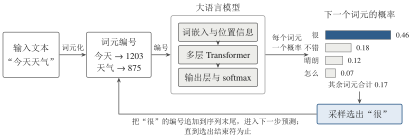
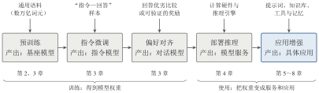

1.2 大语言模型如何工作
用户输入一句话，几秒钟后屏幕上一个字一个字地出现回答。这期间模型内部发生了什么？本节跟踪一次完整的“提问—回答”：文字先被切成词元并转换成编号，模型根据已有的全部词元算出“下一个词元是什么”的概率分布，从中选出一个词元追加到末尾，再重复这一过程，直到生成结束符。模型的全部知识都以参数的形式存放在网络中，这使它无须查资料就能直接作答，也是它会“编造”的根源。本节最后说明一个模型从原始数据到可用产品要经过哪几个阶段，以及这些阶段分别在本书哪一章展开。
1.2.1 从文字到词元
计算机只能处理数字，所以第一步是把文字转换成数字。负责这一步的程序叫词元化器（tokenizer，也常译作分词器）。它把一段文字切成若干小片段，每个片段称为一个词元（token），再按一张固定的词表把每个词元换成一个整数编号。词表的大小记为 \(\lvert\mathcal{V}\rvert\)，当前主流模型的词表通常有几万到二十多万个词元。
一个词元可以是一个汉字、一个常用词、一个英文单词的一部分、一个标点或一段代码符号。词元的切法是从语料中统计出来的：经常一起出现的字符组合会被合并成一个词元，罕见的组合则被拆成更小的片段。因此，中文并不总是“一字一个词元”，同一句话在不同模型中切出的词元数也可能不同。词元是大语言模型计量一切的单位：模型一次能读多少内容、生成速度多快、服务按多少收费，都按词元数计算。词元化算法的细节见第 2、3 章。
1.2.2 逐词元预测：自回归生成
大语言模型生成文字的方式可以用一句话概括：根据前面的所有词元，预测下一个词元的概率分布，选出一个，追加到末尾，重复。这种“每一步都以自己之前的输出为输入”的生成方式称为自回归（autoregressive）生成。图 1-5 画出了其中一步的数据流：
编号变向量：每个词元编号被映射成一个由几千个数组成的向量，称为词嵌入（embedding），同时加入表示位置先后的信息；
逐层融合上下文：向量依次经过几十层 Transformer 层。每一层中的自注意力（self-attention）让每个位置“看一眼”前面所有位置，按相关程度把它们的信息汇总进来；之后的前馈网络再对每个位置单独做变换。经过多层处理，最后一个位置的向量就浓缩了整段上文的信息（具体机制见第 2 章）；
输出概率分布：输出层把最后一个位置的向量变成 \(\lvert\mathcal{V}\rvert\) 个分数，再经 softmax 函数归一化为概率，给词表中每个词元一个“作为下一个词元”的概率 \(P(x_t\mid x_{<t})\)，其中 \(x_t\) 表示第 \(t\) 个词元，\(x_{<t}\) 表示它前面的全部词元；
选择并追加：按某种规则从分布中选出一个词元，接到输入末尾，回到第 1 步，直到选出表示“结束”的特殊词元，或达到长度上限。

图 1-5 自回归生成的一步。模型读入全部已有词元，输出词表中每个词元作为下一个词元的概率，按解码策略选出一个后追加到输入末尾，开始下一步。图中的词元编号和概率均为示意
第 4 步的“选择规则”称为解码策略。最简单的是每次选概率最高的词元（贪心解码），但这样容易产生重复、呆板的文字，所以实际系统多用采样：按概率随机抽取。三个常用参数控制抽样的随机程度：温度（temperature）\(\tau\) 先把分数除以 \(\tau\) 再归一化，\(\tau\) 越小分布越“尖”、输出越确定，\(\tau\) 越大越分散、输出越多样；Top-K 只在概率最高的 \(k\) 个词元中抽取；Top-P（又称核采样）先把词元按概率从高到低排序，取累计概率首次达到或超过 \(p\) 的最小集合，只在其中抽取；候选个数随分布的“尖”或“平”自动变化。这些参数只改变“从分布中怎么挑”，不改变分布本身，因此不能从根本上消除事实错误。解码策略的细节和对比见第 3 章。
按照概率的链式法则，一整段序列的概率等于各步条件概率的乘积： \[P(x_1,x_2,\ldots,x_T)=\prod_{t=1}^{T} P(x_t\mid x_{<t}), \tag{1-1}\] 其中 \(T\) 为序列长度（词元数）。式 （1-1） 是自回归语言模型的数学基础：只要模型能给出每一步的条件概率，就既能评估一段文字有多“像人话”，也能生成新的文字。
例 1-1 用链式法则计算一句话的概率
某模型对句子“我 / 爱 / 北京 / 〈结束〉”（斜线表示词元边界）逐步给出的条件概率为：\(P(\text{我})=0.05\)，\(P(\text{爱}\mid\text{我})=0.10\)，\(P(\text{北京}\mid\text{我爱})=0.20\)，\(P(\text{〈结束〉}\mid\text{我爱北京})=0.50\)。求整句的概率及其自然对数。
| 步骤 | 算什么 | 算式 | 结果 | 这个数从哪来 |
|---|---|---|---|---|
| 1 | 前两个词元 | \(0.05\times0.10\) | \(5\times10^{-3}\) | 题给第 1、2 步概率 |
| 2 | 前三个词元 | \((5\times10^{-3})\times0.20\) | \(1\times10^{-3}\) | 步骤 1 结果 × 第 3 步概率 |
| 3 | 整句（含结束符） | \((1\times10^{-3})\times0.50\) | \(5\times10^{-4}\) | 步骤 2 结果 × 第 4 步概率，即式 （1-1） |
| 4 | 对数概率 | \(\ln0.05+\ln0.10+\ln0.20+\ln0.50\) \(=(-2.996)+(-2.303)+(-1.609)+(-0.693)\) | \(-7.601\) | 乘积的对数等于对数之和；\(\ln(5\times10^{-4})=-7.601\)，两种算法一致 |
数据流向：模型每步输出一个条件概率 → 逐个相乘得到整句概率 → 取对数把连乘变成连加。
一句只有 4 个词元的话，概率已经小到 \(5\times10^{-4}\)；几百个词元的文章，概率会小到计算机的浮点数无法表示（下溢）。所以训练和评测时都用对数概率相加。训练时的损失函数正是真实下一个词元的负对数概率 \(-\ln P(x_t\mid x_{<t})\) 的平均值：模型给真实词元的概率越高，损失越小（第 3 章）。
训练时，模型做的是同一件事：从海量文本中取出一段，让模型在每个位置预测下一个词元，再用真实的下一个词元计算损失，通过反向传播调整参数，使真实词元的概率提高。由于任何一段文本都自带“下一个词元”这个答案，训练不需要人工标注，这是大语言模型能够利用整个互联网规模语料的关键。
1.2.3 知识存在哪里：参数化知识
模型在训练中见过“珠穆朗玛峰是世界最高峰”成千上万次，于是在“世界最高峰是”之后会给“珠穆朗玛峰”很高的概率。这类知识并不存放在某张表格的某一行里，而是分散地体现在数以亿计的参数中，称为参数化知识。它带来三个直接后果：
有截止时间：模型只知道训练数据截止之前的事；要更新知识，就得重新训练或微调，成本很高；
会“编造”：模型输出的是“最像真的”词元，而不是查证过的事实。遇到训练中少见的问题，它也会给出流畅但错误的回答，这称为幻觉（hallucination）。幻觉的成因见第 2 章，工程上的应对见第 1.6.1 小节；
不可追溯：模型说不出某个结论来自哪份资料，也难以精确删除某条知识。
与参数化知识相对，用户在一次对话中提供的文字、上传的文件，都放在模型的上下文窗口（context window）中，即模型生成每个词元时能“看到”的全部输入。上下文窗口是模型唯一的“工作区”：对话结束、内容被清出窗口后，模型并不会记住它，除非系统另行保存并在下次放回窗口（第 8 章）。第 1.4 节介绍的检索增强生成、工具调用等技术，本质上都是在生成之前把可靠的信息放进上下文窗口，以弥补参数化知识的不足。
1.2.4 从数据到产品：一个模型要经过的阶段
用户使用的对话助手，并不是“预训练一次”就得到的。图 1-6 画出了一个模型从原始数据到可用产品的典型阶段：
预训练：在数万亿词元的通用语料上做下一个词元预测，学习语言规律和世界知识，得到基座模型（base model）。这一步消耗全部训练算力的绝大部分。基座模型擅长“续写”，但不会好好回答问题：问它“法国的首都是哪里？”，它可能把这句话当作一份试题的开头，接着续写出更多类似的问题；
指令微调：用成千上万条人工编写或筛选的“指令—回答”样本继续训练，教模型按指令作答。这一步也称监督微调（Supervised Fine-Tuning，SFT）；
偏好对齐：让模型对同一问题生成多个回答，由人（或另一个模型）指出哪个更好，再据此调整模型，使回答更有用、更诚实、更安全。代表方法是基于人类反馈的强化学习（Reinforcement Learning from Human Feedback，RLHF）[7]和直接偏好优化（Direct Preference Optimization，DPO）；对数学、代码等答案可自动判对错的任务，还可以直接用“答对与否”作为奖励来训练模型的推理能力；
部署推理：把训练好的权重加载到服务器上，经过量化、并行、缓存与批处理等优化，以可接受的速度和成本响应大量请求；
应用增强：在模型之外加上提示词、外部知识库、工具和记忆，把它组装成能完成具体任务的应用。
不同机构的具体流程并不相同，例如有的会在预训练之后用领域语料做继续预训练，有的大量使用模型生成的合成数据。但“先通用、后对齐、再部署、最后组装”的顺序是共同的。

图 1-6 一个大语言模型从数据到产品的典型阶段。每个阶段的产出交给下一阶段；上方为各阶段新加入的输入，下方为本书展开该阶段的章
辨析
基座模型和对话模型是同一个网络在不同阶段的产物，不是两种结构。开放权重的模型常同时发布两个版本，名称中带 Base 的是只做过预训练的基座模型，带 Instruct 或 Chat 的是经过指令微调和偏好对齐的版本。前者适合作为继续训练的起点，后者才适合直接对话。另外，“推理”一词在本书中有两种意思：部署阶段的推理（inference）指用训练好的模型计算输出；“推理模型”中的推理（reasoning）指多步思考、逻辑推导的能力。阅读时要按上下文区分。
1.2.5 把大语言模型看作新的“计算机内核”
理解了上下文窗口和逐词元生成，就可以借用一个流传很广的类比来记住大语言模型在一个应用系统中的位置。OpenAI 创始成员、曾任特斯拉人工智能负责人的安德烈·卡帕西（Andrej Karpathy，2026 年 5 月加入 Anthropic）在 2023 年提出：大语言模型像一种新型计算机的中央处理器，围绕它可以搭建一套“操作系统”[8]。表 1-3 列出了这个类比中各部件的对应关系。他当时以 GPT-4 Turbo 为例：可以同时处理 256 个请求（类比 256 个核；它与第 4 章所说的批处理有关，但并发请求数还受调度和显存限制，不完全等同于一次计算的批大小 \(B\)），每秒生成约 20 个词元（类比 20 Hz 的时钟频率），上下文窗口 128K 词元（类比内存容量）。
表 1-3 “大语言模型操作系统”类比
| 计算机部件 | 对应物 | 说明（本书展开处） |
|---|---|---|
| 中央处理器 | 大语言模型 | 逐词元执行“计算”（第 2、3 章） |
| 时钟频率与核数 | 生成速度（词元/秒）与并发请求数 | 受显存带宽和批处理方式限制（第 4.4 节） |
| 内存 | 上下文窗口 | 生成时能直接看到的全部内容，断电（对话结束）即清空 |
| 磁盘与文件系统 | 外部知识库、文件 | 需要时检索出来放进上下文（第 5 章） |
| 输入输出设备 | 文本、图像、音频、视频 | 多模态输入与输出（第 1.4.4 小节） |
| 网络 | 浏览器、其他模型与智能体 | 通过工具和协议与外部系统通信（第 6、7 章） |
| 软件接口 | 提示词、工具调用接口 | 用自然语言和结构化调用“编程”（第 7 章） |
类比只是记忆的钩子。它的价值在于提醒读者：模型本身只负责“算下一个词元”，记忆、知识、行动能力都要由围绕它的系统提供；它的局限在于，大语言模型的“计算”是概率性的，同样的输入可能得到不同的输出，这一点与确定执行指令的处理器完全不同。
例 1-2 上下文窗口能装多少、回答要等多久
按卡帕西类比中的数字，某模型上下文窗口为 128K 词元（按 128 000 个词元计），生成速度为每秒 20 个词元。假设平均每个汉字约占 1.2 个词元（不同模型的词元化器差别较大，此处只作估算）。问：(1) 窗口最多能装下多少汉字的材料？(2) 生成一段 600 字的回答需要多久？若生成速度提高到每秒 100 个词元呢？
| 步骤 | 算什么 | 算式 | 结果 | 这个数从哪来 |
|---|---|---|---|---|
| 1 | 窗口能装的汉字数 | \(128\,000\div1.2\) | 约 \(1.07\times10^{5}\) 字 | 窗口词元数 ÷ 每字词元数（题给假设） |
| 2 | 600 字回答的词元数 | \(600\times1.2\) | 720 个词元 | 字数 × 每字词元数 |
| 3 | 每秒 20 词元时的耗时 | \(720\div20\) | 36 s | 步骤 2 ÷ 生成速度 |
| 4 | 每秒 100 词元时的耗时 | \(720\div100\) | 7.2 s | 步骤 2 ÷ 提高后的速度 |
数据流向：字数与词元数互换（乘或除以每字词元数）→ 词元数 ÷ 生成速度 = 耗时。
约 10 万字相当于一本中篇小说，可见今天的上下文窗口已足以一次读入一整份长报告；但实际可用的窗口还要扣除系统提示、对话历史和输出预留，而且窗口越长，计算和显存开销越大（第 4.4 节）。生成速度为什么主要受显存带宽限制，见第 4 章的估算。